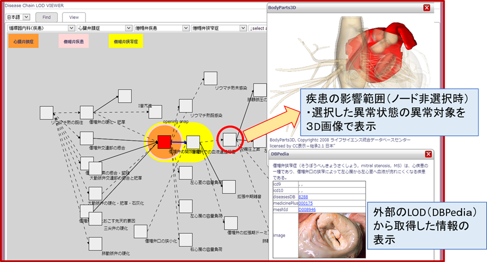

疾患オントロジー
－疾患連鎖Linked Data版公開ページ－
[English] （2015/05/14更新）
※ 本ページでは，「臨床医学オントロジー（医療情報システムのための医療知識基盤データベース研究開発事業）」の一環として開発された，疾患オントロジーを公開しています．
※ 本ページへのリンクや参照の際には，必ず，トップページ（http://lodc.med-ontology.jp/）を用いてください．
※ 疾患オントロジーのデータのご利用を希望される方は，「臨床医学オントロジー」のページの「４．基本データベース」の項目に書かれている内容をご覧ください．
最新版
(2014/06/10更新)
［システムの起動］ ※Internet Explorerでの起動
疾患コンパス－LODチャレンジ2013への応募作品－
［システムの起動］ ※Internet Explorerでの起動
本システムは，疾患連鎖LOD（LODチャレンジ2013データセット部門：d083，詳細は下記）を，他のデータセットとつなげることで，「疾患に関する様々な情報を統合的に閲覧」できるサービスです．
具体的には，
・ DBpedia（日本語/英語）を介して，ICD，Meshなどのライフサイエンス分野で広く使われているコード体系へのリンク
・ ライフサイエンス統合データベースセンターが提供しているBodyPart3Dと連携することで，その疾患に関連する部位の３D画像を表示
することができます．
今後，様々なデータベースとのマッピングを進めると共に，本サービスのAPI化を予定しています．

応募情報
応募番号：アプリケーション部門：a105
応募者氏名：
古崎晃司，山縣友紀，加藤敦丈（大阪大学）
今井健，大江和彦（東京大学）
溝口理一郎（北陸先端大学院大学）
疾患連鎖LOD －LODチャレンジ2012への応募作品－
「Linked Open Data チャレンジ Japan 2012」にて「ライフサイエンス賞」を受賞しました！
応募情報
応募番号：データセット部門 d083
応募者氏名：
古崎晃司，加藤敦丈（大阪大学）
今井健，大江和彦（東京大学）
溝口理一郎（北陸先端大学院大学）
データセットの概略説明
「異常状態の因果連鎖」に基づいた疾患定義と，その患者に典型的に見られる異常状態（原因や症状）の因果連鎖に関するデータセットです．6つの診療科の代表的な約1,800の疾患に含まれる，約15,000の異常状態について，臨床医によって記述された因果関係がデータ化されており，
・各疾患がどのような原因で発症し，どのような症状を引き起こすか？
・ある異常がどのような因果連鎖を経て，どのような状態を引き起こし，どのような疾患となるか？
…
といった情報を得ることが出来ます．
データセットの公開方法
以下の2つのをWebサービスを提供しています（iOS，Android端末にも対応）．
疾患連鎖LOD Viewer [JIST2013デモ用新バージョン]
［システムの起動］ ※Internet Explorerでの起動
疾患連鎖LOD Viewer
[使い方の説明] ［システムの起動］ ※Internet Explorerでの起動
疾患連鎖（疾患定義に含まれる因果連鎖）の可視化システムです．
-「疾患名」，「その疾患に含まれる異常状態名」から疾患定義を検索
-「疾患の分類（is-a）階層」から表示する疾患を選択
の何れかで選択した疾患連鎖を可視化して表示します．
SPARQL Endpoint
[使い方の説明]
［システムの起動］
簡易クエリ入力支援機能付きのSPARQL Endpointです．
通常のSPARQLクエリによる検索に加え，
- 検索結果から選択したリソースの可視化
- 検索結果が疾患の場合は，上述の「疾患連鎖LOD
Viewer」と連携して疾患連鎖を可視化
ができます．
データモデルの説明
「疾患オントロジー」から「異常状態の因果連鎖」に関する情報のみを抽出してRDF化しています．
本来は，オントロジーですので「クラス（概念）レベル」の情報を表していますが，LODとして利用する際の利便性を考え，全てインスタンス（RDFリソース）の形に変換してあります．
（オントロジーとしても，別途公開を検討していますが，詳細は決定次第ご案内します）
データモデルの概要
・各疾患はDisease typeのインスタンス，異常状態はAbnormal_State typeのインスタンスとして表現されます．
・各疾患の因果連鎖を構成する異常状態は，
- hasCoreState：疾患定義となる因果連鎖に含まれる異常状態
- hasDerivedState：疾患定義には含まれないが，その疾患に罹患した患者に典型的に見られる異常状態
という2種類のプロパティで表されています．
・異常状態間の因果関係は，hasCauseおよびhasResultプロパティで表現されています．
・疾患のis-a関係はsubDiseaseOfプロパティで表されます．
（rdfs:subClassOfを用いていない理由は，各疾患や異常状態をインスタンスとすることで，因果関係の検索・探索を簡単に行えるようにするためです．オントロジー版ではクラスレベルでのより厳密な定義を提供します）
疾患連鎖の記述例

・この例では，「疾患」Aとその下位疾患である「疾患B」に含まれる因果連鎖を示しています．
・「疾患B」の因果連鎖を取得する場合には，上位疾患である「疾患A」に含まれる因果連鎖を合わせて取得する必要があります．よって，「疾患B」の因果連鎖を「疾患連鎖LOD Viewer」の形式で可視化すると下記のようになります．

クラス・プロパティの一覧
・本データセットで用いられてるクラス・プロパティの一覧は，下記の通りです．
クラス（Type）
Disease：疾患
Abnormal_State：異常状態
- OR_State：連鎖上で因果のつながりがORであることを表す．
- Unkown_State：何らかの異常があることは分かっているが内容が不明であることを表す．
- Omitted_State：異常状態間の因果連鎖の途中の詳細を省略していることを表す．
プロパティ
hasState：各疾患の因果連鎖に含まれる異常状態を表す．
- hasCoreState：疾患定義となる因果連鎖に含まれることを表す．
- hasDerivedState：疾患定義には含まれないが，その疾患に罹患した患者に典型的に見られる異常状態であることを表す．
hasCause：ある異常状態の原因を表す
- hasProbableCause：この原因が通常よりも高い確率で発生することを表す．
hasResult：ある異常状態の結果を表す
- hasProbableResult：この結果が通常よりも高い確率で発生することを表す．
isSpecializedFrom：疾患の因果連鎖に含まれる異常状態の種類が上位の疾患よりも特殊化されていることを表す．
subDiseaseOf：ある疾患の下位疾患であることを表す．
subStateOf：ある異常状態の下位の異常状態であることを表す．
謝辞
- 本データセットは「厚生労働省医療知識基盤研究開発事業」の助成を受けて開発されました．
- 本データセットの構築にあたり，下記の方々にご協力を頂きました．
桜井 亮太（東京大学）
林 亜紀（東京大学）
寺田さとみ（東京大学）
大友 夏子（東京大学）
松村 貴由（東京大学）
脇 嘉代（東京大学）
山縣 友紀（大阪大学）
国府 裕子（大阪大学）
注意事項
- 本データセットは「厚生労働省医療知識基盤研究開発事業」の助成を受けて開発中の成果である「疾患オントロジー」の一部を公開しているものです．
- 今後，データセットの更新，利用方法の詳細などにつきましては，公開サイトにて随時，ご案内する予定です．
その際，データモデルやライセンス形態の変更が伴う場合がありますので，ご注意ください．
Contact: kozaki@ei.sanken.osaka-u.ac.jp
Last Update:2013/01/29